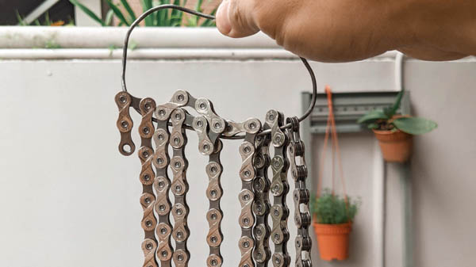
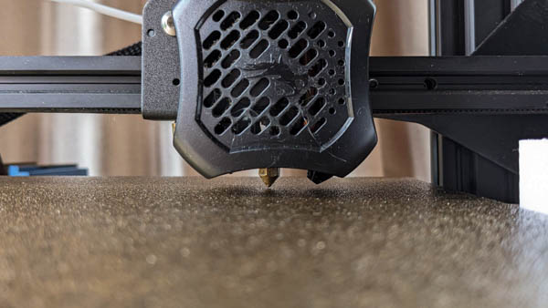

Cycling / 5 min read
Waxing a Bicycle Chain: Thoughts & Methods
by Xuan | 10.08.2022
Much ink has been spilt, discussing the arcane art of waxing one's bicycle chain over the classic one-two lube/degreaser combo.

3D Printing / 5 min read
What is a PEI Magnetic Print Bed?
by Xuan | 10.08.2022
So you've bought your kit printer and played around with it for a couple of months now.

Cycling / 5 min read
Waxing a Bicycle Chain: Thoughts & Methods
by Xuan | Written on 10.08.2022
Much has been said about the benefits of waxing the bicycle chain over the classic one-two lube and degreaser combo.